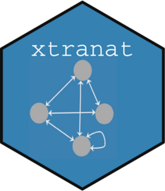

xtranat 
The functions in the ‘xtranat’ package are network metrics (centrality and betweenness) based on random walks. They compute Counting Betweenness and Random Walk Centrality. It also computes the normalized values of each function.
Installation
You can install the development version of xtranat from GitHub with:
# install.packages("devtools")
devtools::install_github("fdepaolis/xtranat")Example
Load the library and run the cbet() and rwc() functions:
library(xtranat)
## Main functions
cbet(exmpl_matrix)
#> [,1]
#> [1,] 1.2366382
#> [2,] 0.9450571
#> [3,] 1.1395318
#> [4,] 1.0476340
#> [5,] 0.9394608
#> [6,] 1.0749778
#> [7,] 0.9233395
#> [8,] 1.2235290
#> [9,] 1.1248406
#> [10,] 0.8927518
rwc(exmpl_matrix)
#> [,1]
#> [1,] 0.15136956
#> [2,] 0.09906360
#> [3,] 0.09854315
#> [4,] 0.09586213
#> [5,] 0.09468037
#> [6,] 0.11463330
#> [7,] 0.10890458
#> [8,] 0.13681588
#> [9,] 0.13050876
#> [10,] 0.12727279
## Normalized values (maximum value=1.0; minimum value=0.0)
cbet_norm(exmpl_matrix)
#> [,1]
#> [1,] 1.00000000
#> [2,] 0.15210046
#> [3,] 0.71762060
#> [4,] 0.45038766
#> [5,] 0.13582676
#> [6,] 0.52990161
#> [7,] 0.08894708
#> [8,] 0.96187919
#> [9,] 0.67489966
#> [10,] 0.00000000
rwc_norm(exmpl_matrix)
#> [,1]
#> [1,] 1.00000000
#> [2,] 0.07732030
#> [3,] 0.06813950
#> [4,] 0.02084618
#> [5,] 0.00000000
#> [6,] 0.35197051
#> [7,] 0.25091577
#> [8,] 0.74327240
#> [9,] 0.63201440
#> [10,] 0.57493185